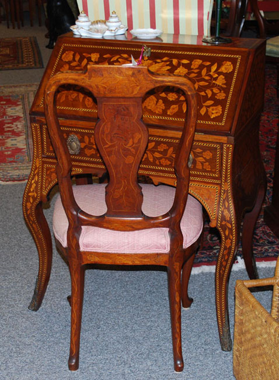

|
We have over 55 years of combined experience in restoring antique furniture. Our priority is to restore existing finishes, but we do have the capability to remove old, “failed” finishes, re-stain and apply a new finish. Our new finishes consist of a minimum of three coats of lacquer, with proper sanding between coats. Probably 50% of the furniture we restore are chairs. The normal issue with chairs, due to their frequent use, is that over time the chair rungs, spindles, and legs become loose. Some restorers simply inject new glue in a loose joint and then clamp the piece, however our approach is far more extensive and long lasting. When we restore a chair, the chair is completely disassembled and all the old glue is removed prior to introducing the new glue. Simply adding new glue to old glue is not an alternative for us as the joints will quickly weaken once again. The same holds true for other types of antique furniture that we restore. During the restoration process, we take digital photos which we print for you. The photos, coupled with a detailed written description of the work performed, provides you with a better understanding of what was actually done to your piece. We have a philosophy regarding our furniture restoration: do it right, do it once, and be proud of the finished product. We stand behind our philosophy – and are very proud of it! We do not strip paint, nor do we restore furniture that is less than 60 years old. DURING THE 2024 SEASON THE RETAIL SHOP THURSDAYS, 9 AM TO 2 PM FRANCINE WILL BE DOING ALSO ON THURSDAYS FRANCINE WILL BE Fine Period Furniture: Queen Ann Thru American Country
We Are
Always Interested In Buying Single Items to Complete
Estates of
|